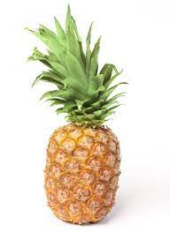

Ananasul este un fruct exotic
care nu isi gaseste locul
suficient de des
in bucataria romaneasca.
Ananasul (Ananas comosus) este un fruct comestibil cărnos,
cu gust dulce-acrișor și foarte aromat. Are numele comun atât al plantei tropicale cât și al fructului.
Conține vitaminele A, B, B1 și C. Conține de asemenea betacaroten, potasiu, magneziu și săruri minerale.
O sursă excelentă de mangan, ananasul este denumit în limba engleză “pineapple”, deoarece înfățișarea
lui este asemănătoare cu conurile de pin, iar în momentul în care Cristofor Columb
a adus ananasul pentru prima dată în Europa, în 1493, a spus despre fruct că este “pinul indienilor”